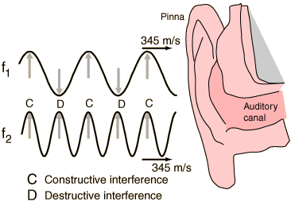

Beats
When two sound waves of different frequency approach your ear, the alternating constructive and destructive interference causes the sound to be alternatively soft and loud - a phenomenon which is called "beating" or producing beats. The beat frequency is equal to the absolute value of the difference in frequency of the two waves.
Arising
from simple interference,
the applications of
beats are extremely
far ranging.
|  |
| Wave envelope for two tones | Applications of beats |
Traveling wave concepts
| HyperPhysics***** Sound | R Nave |